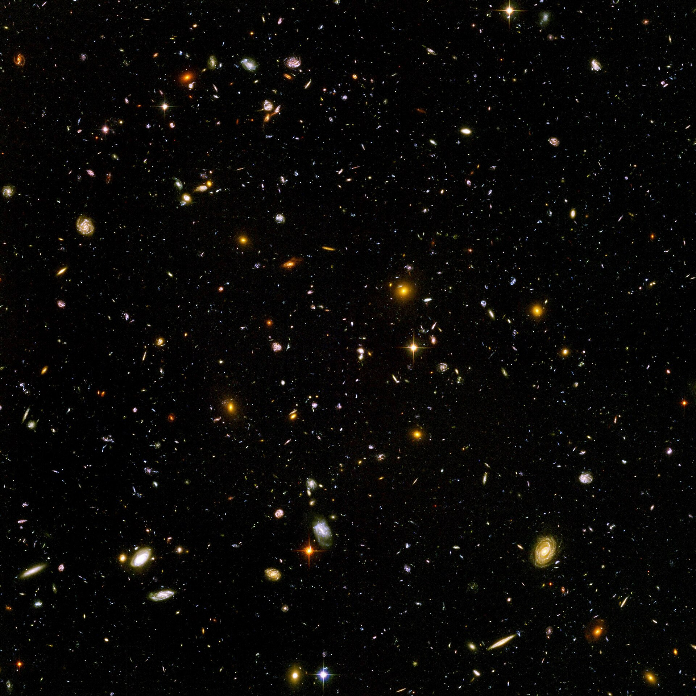
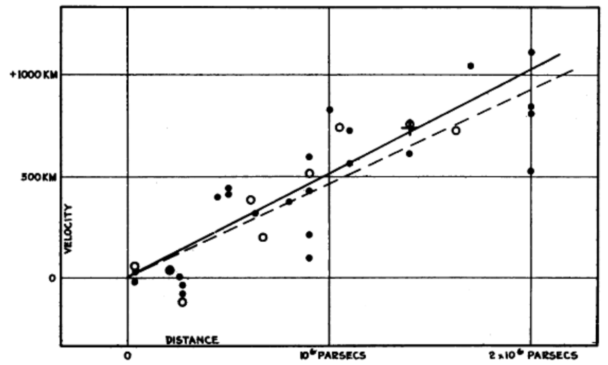

2026학년도 중학교 3학년 과학 • 지구과학 VII-3
우주에는 중심이 없다
제 20강: 팽창하는 우주
거의 모든 은하가 우리에게서 멀어지고 있습니다. 그렇다면 우리은하가 우주의 중심일까요?

여기 보이는 점은 거의 다 '은하'다
허블 망원경이 아무것도 없어 보이는 하늘 한 조각(보름달의 100분의 1 넓이)을 11일 동안 노출해 찍었다. 그 안에 은하가 약 1만 개 있었다. 19강의 우리은하는 그중 하나일 뿐이다.
NASA, ESA · Hubble Ultra Deep Field · 퍼블릭 도메인
1. 외부 은하 — 우리은하 바깥의 은하

안드로메다 은하(M31) · Adam Evans, CC BY 2.0
외부 은하: 우리은하 바깥에 있는 은하. 관측 가능한 우주에 수천억 개가 있다.
한때는 '성운'이었다
망원경으로는 뿌옇게만 보여 우리은하 안의 성운(19강)으로 여겨졌다. 1924년 허블이 안드로메다까지의 거리를 재고서야 '바깥'임이 확정됐다.
거리는 어떻게 쟀나
18강의 연주 시차는 수백 pc까지가 한계다. 은하까지는 수십만 pc — 다른 자가 필요했다(13쪽).
먼저 예상해 봅시다
예상 1
거의 모든 은하가 우리에게서 멀어진다면, 우리은하는 우주의 중심일까요?
예상 2
우주가 커진다면 커지는 것은 은하일까요, 은하 사이일까요?
예상 3
커지고 있다면 우주에는 바깥이 있어야 할까요?
정답을 맞히는 단계가 아닙니다. 지금 생각과 그 까닭을 한 문장으로 적으세요.
이 차시의 목표
[9과23-03]
우주가 팽창하고 있음을 모형으로 설명할 수 있다.
관측하기
은하들이 멀어지고 있다는 증거를 말하기
모형 다루기
고무줄·풍선 모형으로 팽창을 재현하기
해석하기
중심이 없다는 것과 공간이 커진다는 것을 설명하기
※ 허블 법칙의 정량 계산, 빅뱅의 세부 증거, 우주 배경 복사는 중3 범위 밖이다. 여기서는 멀수록 빠르다는 관계와 모형까지만 다룬다.
2. 멀어지는 것을 어떻게 알까 — 빛의 색이 말해 준다
적색 편이: 멀어지는 천체의 빛은 파장이 길어져(18강 보충 — 붉은 쪽이 긴 파장) 스펙트럼의 선이 붉은 쪽으로 밀린다. 밀린 정도가 클수록 빨리 멀어진다.
※ 구급차가 멀어질 때 사이렌이 낮게 들리는 것과 같은 원리다. 소리는 낮은 음(긴 파장), 빛은 붉은색(긴 파장)이 된다.
3. 관측된 사실 — 그리고 곧바로 생기는 문제
사실 ①
가까운 몇 개를 빼면 거의 모든 외부 은하의 빛이 적색 편이를 보인다 — 우리에게서 멀어지고 있다.
사실 ②
멀리 있는 은하일수록 적색 편이가 크다 — 멀수록 더 빠르게 멀어진다.
모든 은하가 우리에게서 달아난다면, 우리은하는 우주의 중심이거나 아주 특별한 곳이어야 하지 않을까요?
이 질문에 답하려면 모형이 필요하다. 다음 쪽에서 직접 만들어 본다.
4. 탐구 — 고무줄 우주를 늘여 보자
| 은하 | 처음 거리 | 지금 거리 | 늘어난 거리 | 멀어지는 빠르기 |
|---|
※ 거리는 고무줄에 그은 눈금 칸으로 센다. 관측자를 A에서 D로 바꿔 보고, 표의 마지막 열이 어떻게 달라지는지 보자.
관찰 결과를 정리하면
| 내가 사는 은하 | 가까운 은하 | 먼 은하 | 내가 본 하늘 |
|---|---|---|---|
| A에서 보면 | 조금 멀어진다 | 많이 멀어진다 | 모두 A에서 달아난다 |
| B에서 보면 | 조금 멀어진다 | 많이 멀어진다 | 모두 B에서 달아난다 |
| D에서 보면 | 조금 멀어진다 | 많이 멀어진다 | 모두 D에서 달아난다 |
A도, B도, D도 모두 "내가 가만히 있고 남들이 달아난다"고 말합니다. 그렇다면 누가 중심일까요?
아무도 아니다. 고무줄에는 중심이 없다.
관찰에서 규칙으로
| 관찰한 사실 | 완성할 규칙 |
|---|---|
| 먼 은하일수록 더 많이 멀어졌다 | 멀리 있는 은하일수록 |
| 어느 은하에서 보아도 결과가 같았다 | 우주에는 |
| 은하는 고무줄에 붙어 있었다 | 은하가 공간 속을 날아간 것이 아니라 |
칸마다 알맞은 말을 골라 규칙을 완성하세요.
우주 팽창: 은하 사이의 공간이 사방으로 늘어나는 현상. 그래서 어느 은하에서 보든 멀수록 빠르게 멀어지고, 중심은 없다.
5. 커지는 것은 은하가 아니라 은하 사이다
늘어나는 것
은하와 은하 사이의 공간
늘어나지 않는 것
은하 자체, 태양계, 지구, 우리 몸 — 중력과 전기력으로 묶인 것은 팽창을 이긴다
그래서
안드로메다는 오히려 가까워지고 있다. 우리은하와 중력으로 묶여 있기 때문이다
6. 모형이 맞게 말하는 것과 틀리게 말하는 것
| 모형 | 잘 보여 주는 것 | 오해를 부르는 것 |
|---|---|---|
| 고무줄 (1차원) | 멀수록 빠르다 · 관측자를 바꿔도 같다 | 고무줄에는 양 끝이 있다. 우주에는 끝이 없다 |
| 풍선 표면 (2차원) | 중심도 가장자리도 없다 · 사방이 똑같다 | 풍선 속과 바깥이 있어 보인다. 은하는 표면에만 있다고 약속해야 한다 |
| 건포도 빵 | 사이만 벌어지고 건포도는 그대로다 | 빵에는 가장자리와 중심이 있다 |
모형은 일부만 닮는다. 세 모형 모두 "바깥"이 있어 보이는 것이 공통된 약점이다. 우주가 커진다는 말은 바깥으로 번져 나간다는 뜻이 아니라, 안쪽 거리가 모두 늘어난다는 뜻이다.
※ 모형을 쓸 때는 어디까지 닮았는지를 함께 말하는 습관을 들이자. 이것이 과학에서 모형을 다루는 방식이다.
과학사 — 우주를 잴 자를 만든 사람
헨리에타 스완 리빗(1868–1921) · 퍼블릭 도메인
1912년, 하버드 — 시급 30센트의 계산원
18강의 '하버드 컴퓨터스' 중 한 사람이던 리빗은 마젤란은하의 변광성 1777개를 조사하다 규칙 하나를 찾아냈다. 밝기가 변하는 주기가 길수록 실제로 더 밝다는 것이다.
왜 이것이 '자'가 되는가
18강에서 배웠듯 실제 밝기와 보이는 밝기를 함께 알면 거리를 알 수 있다. 주기만 재면 실제 밝기를 알 수 있으니, 이제 연주 시차가 닿지 않는 곳까지 거리를 잴 수 있게 됐다.
허블이 안드로메다까지의 거리를 잰 것도 이 자였습니다. 리빗이 없었다면 오늘 수업의 어느 부분이 불가능했을까요?
※ 리빗은 이 발견으로 상을 받지 못했다. 1925년 노벨상 후보로 추천하려던 학자가 있었으나, 그는 이미 4년 전에 세상을 떠난 뒤였다.
과학사 — 계산이 먼저였고, 관측이 뒤따랐다
조르주 르메트르(1894–1966) · 퍼블릭 도메인
1927 — 르메트르
신부이자 물리학자였던 그는 아인슈타인의 방정식에서 우주가 팽창해야 한다는 답을 얻었다. 프랑스어 학술지에 실려 거의 읽히지 않았다.

허블의 1929년 원본 그래프 · 퍼블릭 도메인
1929 — 허블
가로축이 거리, 세로축이 멀어지는 속도다. 가로축 눈금이 PARSECS — 18·19강에서 쓴 그 pc다. 점이 몇 개 안 되고 많이 흩어져 있는데도 오른쪽 위로 오르는 추세가 보인다. 오늘 고무줄에서 얻은 그 규칙이다.
※ 아인슈타인은 정적인 우주를 지키려고 방정식에 상수를 하나 넣었다가, 팽창을 알고 나서 그것을 후회했다고 전해진다. 2018년 국제천문연맹은 이 법칙의 이름을 허블–르메트르 법칙으로 바꾸기로 결의했다.
7. "중심이 없다"는 말의 뜻
✗ 이런 뜻이 아니다
한 점에서 폭발해 파편이 바깥으로 날아가고 있다. 그 폭발 지점이 우주의 중심이다.
✓ 이런 뜻이다
모든 곳에서 동시에 거리가 늘어나고 있다. 그래서 어느 은하에서 보아도 자기가 가만히 있는 것처럼 보인다.
지구는 태양계의 중심이 아니었고(16세기), 태양계는 우리은하의 중심이 아니었으며(19강, 1918년), 우리은하는 우주의 중심이 아니다(오늘). 관측이 정밀해질 때마다 인류는 중심에서 한 걸음씩 밀려났다.
그렇다면 "우주의 바깥에는 무엇이 있나요?"라는 질문은 왜 답하기 어려울까요? (힌트: 12쪽의 모형 한계)
오늘의 정리
외부 은하
우리은하 바깥의 은하. 수천억 개
적색 편이
멀어지는 은하의 빛은 붉은 쪽으로 밀린다
멀수록 빠르다
먼 은하일수록 더 빠르게 멀어진다
중심이 없다
늘어나는 것은 은하 사이의 공간이다
표지의 질문에 답하면 — 모든 은하가 우리에게서 멀어지는 것은 우리가 중심이기 때문이 아니라, 어느 은하에서 보아도 그렇게 보이기 때문이다. 우주에는 중심이 없다.
형성평가
고무줄에 은하 A·B·C·D를 같은 간격으로 붙이고 양쪽으로 늘였다. 은하 B에 사는 관측자가 보게 될 것은?
✅ 정답! ②
고무줄이 늘어나면 모든 간격이 함께 벌어지므로, B에서 보면 나머지가 전부 멀어진다. 그리고 B에서 가장 먼 D의 간격이 가장 많이 늘어나므로 D가 가장 빠르다. ③가 틀린 이유가 이 차시의 핵심이다 — 거리에 따라 빠르기가 다르다.
오개념 확인
"우주가 팽창하니 모든 것이 함께 커진다"에 대한 가장 좋은 반례는?
✅ 정답! ② 안드로메다
중력으로 묶인 것은 팽창에 끌려가지 않는다. 은하 안의 별, 태양계, 지구, 우리 몸, 자도 마찬가지다 — 그래서 자가 늘어나 버려 팽창을 못 재는 일은 생기지 않는다. ①③④는 모두 사실이지만 '모든 것이 커진다'의 반례는 아니다.
출구 질문 — 오늘 쓴 세 모형(고무줄·풍선·건포도 빵) 중 하나를 고르고, 그 모형이 잘못 말하는 것 한 가지를 한 문장으로 쓰세요.